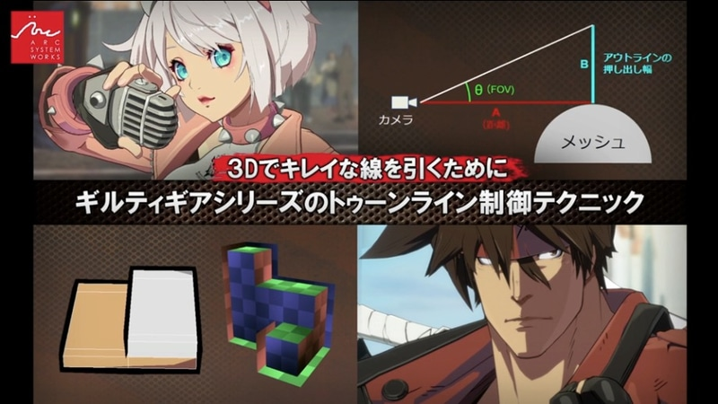
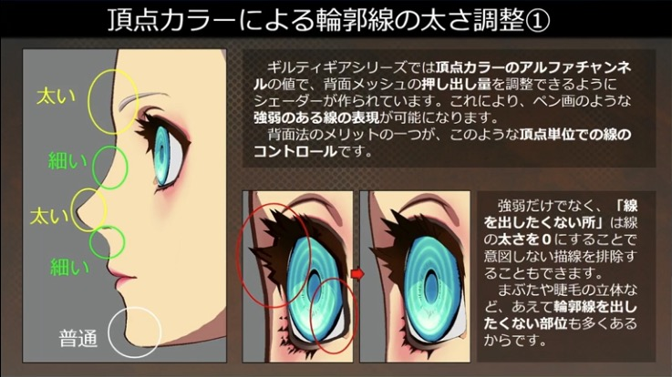
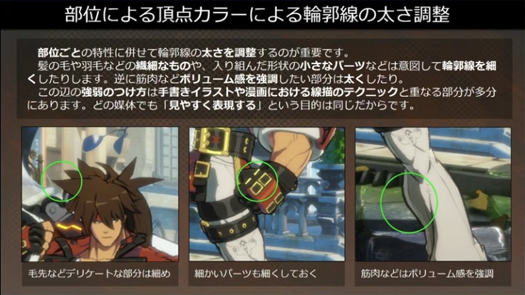
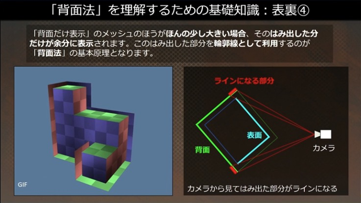
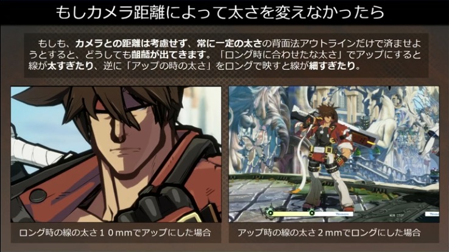
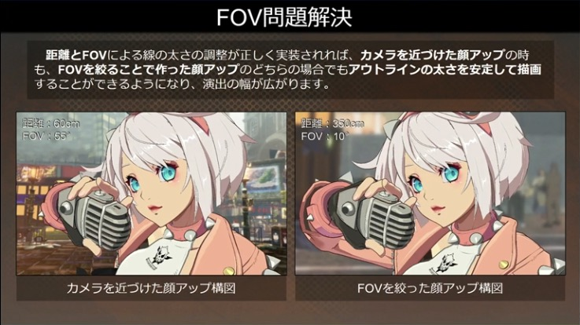
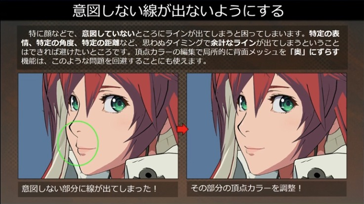
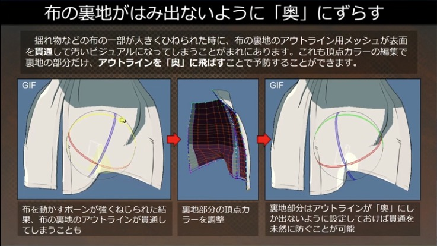
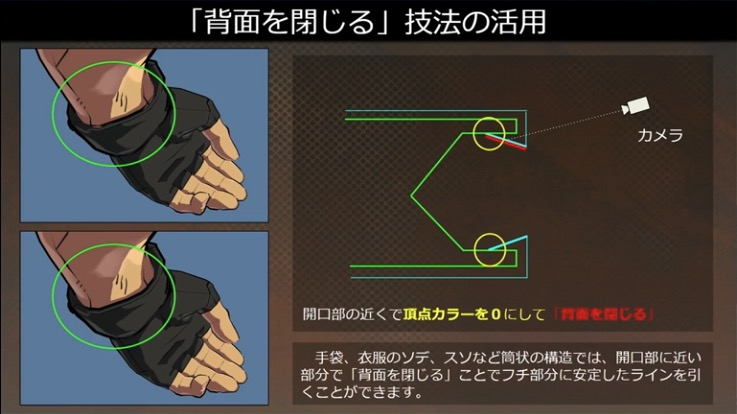

11分
仕組みを知る
- 頂点カラーと補間
- テクスチャとの違い
- メリットと注意点
専門学校国際理工カレッジ ／ ゲームクリエイター科 1年
ゲームでの活用方法とMayaでの表示
キャラクターの輪郭線。
線の太さはどうやって変える？
30分 Autodesk Maya 2025

画像を表示できません。下の出典から参照できます。
導入
11分
8分
9分
導入2分を含めて30分。
基礎
ポリゴンの頂点に色情報を持たせる仕組み。
RGB は赤・緑・青の3つの成分。成分の組み合わせで色を表す。
A（アルファ） は必要に応じて追加する値。透明度や効果の強さなどに使える。
基礎
基礎
| 比べる項目 | 頂点カラー | テクスチャ（表面に貼る画像） |
|---|---|---|
| 保存場所 | モデルの頂点データ | 画像データの各画素 |
| 細かさ | 頂点の配置と密度で決まる | 画像の解像度や貼り方で決まる |
| UV展開 | 色を保存するのに不要 | 一般的な画像の貼り付けには必要 |
| データ量 | 頂点数・チャンネル数・形式 | 解像度・チャンネル数・圧縮方式 |
| 主な用途 | 色の変化、効果の強さ | 文字、模様、細かな質感 |
UVは画像を貼る位置を示す座標。どちらが軽いかは条件次第で、描画負荷には見た目の計算も関わる。
基礎
シェーダーは見た目を計算するプログラム。マスクは効果をかける場所や強さを示す値。
基礎
両端の間で広く変化する。
中央だけ明るく指定できる。
ゲームでの活用
たとえば頂点カラーのRを 0＝効果なし、1＝最大 として読む。値の意味は制作者が決める。
ゲームでの活用
アニメのような3DCGに、ペン画のような線の強弱を付ける。

画像を表示できません。下の出典から参照できます。
顔の線 横顔の線幅を頂点カラーのアルファ値で調整する。

画像を表示できません。下の出典から参照できます。
部位ごとの強弱 毛先や装飾は細い線、筋肉は太い線で描く。
ゲームでの活用
記事で確認できる工夫 背面法を使い、部位による線の強弱は頂点カラーで調整。距離や視野角にも別途対応する。

画像を表示できません。下の出典から参照できます。
右図の赤で示した部分が、カメラから見える輪郭線。
ゲームでの活用
カメラの距離と視野角（映る範囲の広さ）に合わせて、押し出す量を調整する。

画像を表示できません。下の出典から参照できます。
距離の影響 同じ押し出し量のまま近づくと、線が太く見える。

画像を表示できません。下の出典から参照できます。
補正した例 距離や視野角が変わっても、線幅を保てる。
ゲームでの活用
顔や衣装の動きも見ながら、部位ごとに線の出方を調整する。

画像を表示できません。下の出典から参照できます。
口元
表情で出る余計な線を、頂点カラーで消す。

画像を表示できません。下の出典から参照できます。
衣装の裏地
線を描く面を奥へずらし、裏地の線が表に出るのを防ぐ。

画像を表示できません。下の出典から参照できます。
手袋の開口部
裏側の面を閉じ、開口部の輪郭線をきれいに出す。
Maya 2025 実習
シェーディング Shading
↳ すべてをスムーズ シェード Smooth Shade All
メッシュ表示 Mesh Display
↳ 表示カラー アトリビュートの切り替え Toggle Display Colors Attribute
出典 Autodesk Maya 2025 ヘルプ「頂点カラーを可視にする」
Maya 2025 実習
出典 Autodesk Maya 2025 ヘルプ「頂点カラーを可視にする」「カラー セット エディタ オプション」
まとめ